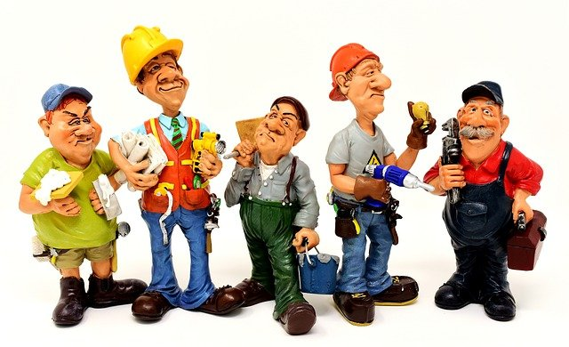

La promoción de ventas es una variable de la mezcla de promoción (comunicación comercial), consiste en incentivos de corto plazo, a los consumidores, a los miembros del canal de distribución o a los equipos de ventas, que buscan incrementar la compra o la venta de un producto o servicio. Igualmente es una herramienta de la mezcla de la promoción mix (precio, producto, plaza y promoción) que se emplea para apoyar a la estrategia publicitaria y a las ventas personales; de tal manera que la mezcla comunicacional resulte más efectiva hacia el consumidor. Por todo ello, es imprescindible que los mercadólogos y las personas involucradas en las diferentes actividades de marketing, conozcan en qué consiste la promoción de ventas, las características que la distinguen, su nicho de mercado, el target group, los objetivos que persigue y las herramientas que se pueden emplear.
